2026 · 项目
ALS 潜入关卡「Infiltration」
攀爬潜入 → 潜行取数据 → 触发警报后限时逃离
用 Unreal Engine 5 与 ALS 第三人称运动系统做的潜入关卡。三段式节奏（垂直探索 / 潜行 / 限时逃离），核心机制创新是"能量弓按钮链"——玩家必须在掩体后用能量弓按正确顺序射中一串限时按钮。项目最大的收获来自失败：潜行和计时不能混用。
- 担任
- 关卡设计（单人）
- 团队
- 个人项目
- 周期
- 2026.03 – 2026.06
- 引擎 / 工具
- Unreal Engine 5.7 + ALS 运动系统
- 类型
- 关卡设计 · 潜入 / 平台跳跃
- 状态
- 已完成课程作业（PROD387 / PROD323）

Overview
项目概述
关卡设定是「Level 5 – Infiltration」：玩家被指控从事间谍活动并被捕，逃出后藏匿起来， 知道组织里有人陷害自己，但不知道是谁。于是他要潜入自己组织的保密设施，读取电脑里的数据找出真正的间谍， 然后在被抓住之前逃出去。
这个设定有一个很关键的设计约束：玩家不能伤害守卫——因为那是他自己的组织。 所有冲突都必须靠潜行和机动来解决，这直接决定了关卡的机制取舍。
三段式节奏
- 垂直探索 / 自由攀爬：从设施外部向上攀爬，寻找潜入点。节奏慢，强调空间感和"这是哪"。
- 潜行与解谜：在服务器房躲开巡逻守卫的视线，用能量弓远程触发按钮解开锁定的区域。紧张、非战斗。
- 限时逃离：数据得手、警报响起后，必须在时间压力下穿过移动平台与致命深坑。这是唯一应该出现计时的一段。
评审时最希望被注意到的就是这三段之间的节奏转换，以及潜行区里那些"必须躲在低矮掩体后、 用能量弓按顺序击中一串按钮"的设计。
Brief
关卡简报与约束
| 项目 | 要求 |
|---|---|
| 宏观玩法 | 必须包含探索、位移（traversal）、潜行、以及限时位移（在时间压力下跑过一段空间） |
| 必须的节拍 | 攀爬探索段 → 潜行段 →（跳过取数据的过场）→ 限时逃离段 |
| 已有机制 | 自由攀爬 / 翻越、钥匙与门、潜行、收集物——玩家已经学过，不需要再教 |
| 新机制 | 能量弓、能量按钮、能量装置、能量中继——需要做有层次的引入 |
| 敌人 | 巡逻守卫。玩家不能伤害他们，也不能被发现；因此需要足够密集的检查点，避免被抓后损失太多时间 |
新机制的设计空间
- 能量弓：射出的能量弹不能伤害人或机器人，但可以制造声音引开守卫、射击收集物、触发能量按钮。
- 能量按钮：开 / 关按钮、限时按钮（击中后开启并随时间衰减）、累积按钮（需要多次命中）、脉冲按钮（周期性通断）。
- 能量装置与中继：按钮可以把信号中继给其他按钮或装置，用来显隐几何体、开关移动平台。
宏观图与节拍图
正式动工前我先用 Macro Chart 把四段玩法的层级、时长、情绪和所需机制排成一行， 再据此写 Beat Chart——先定节奏，再定布局。这一步让后面所有"这块地该放什么"的问题都有了参照。
Concept
概念设计
一句话提案
一次高风险的潜入体验，把平台跳跃、潜行与解谜缝在一起：玩家要攀爬一座高度戒备设施的外墙， 潜行穿过重兵把守的服务器房，用能量弓解开"按钮链"谜题来打开封锁区； 数据到手之后节奏完全翻转，变成在致命深渊上方踩着移动平台的限时跑酷逃亡。
主题与地点
主题是「高科技企业数据中心 / 秘密设施」。视觉风格偏写实，但保留高对比度的视觉提示， 参考方向接近《镜之边缘》与《传送门》。照明是冷调的工业光（冷蓝 + 亮白）， 目的是让发光的能量按钮和橙色的可攀爬平台在环境里一眼可辨。
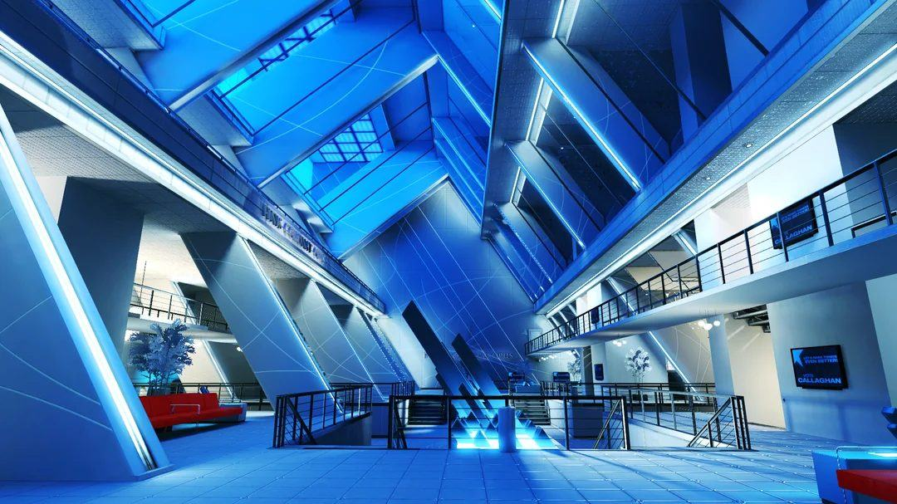
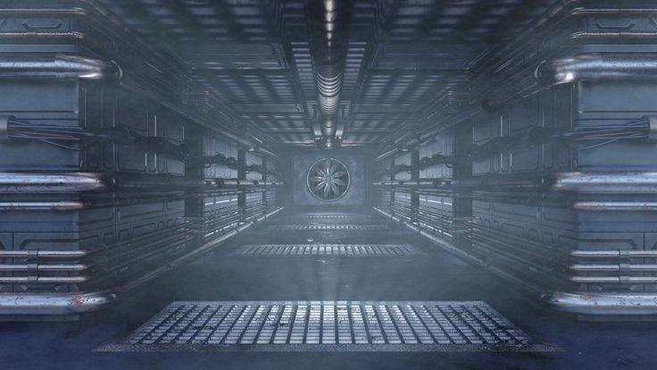
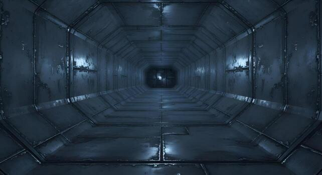
关卡由三个空间构成：中央带升降机的通风井（初始攀爬与跨越）、 布满主机、可作为"隐形掩体"的服务器房，以及最后必须靠移动平台跨越的 深层处理深渊（击杀区）。
概念评审反馈
概念一开始偏抽象，看起来像一连串互不相关的平台跳跃挑战或"悬空方块"，而不是一次完整的潜入行动。
敌人的存在也像是被硬塞进来的障碍，而不是这个世界逻辑的一部分。
我的解法：把抽象方块改造成可识别的道具——低矮掩体排成服务器机架的样子， 位移段包装成通风管道。这样一来，AI 守卫有了巡逻的合理理由，布局也开始像一个有用途的设施。 这条反馈后来一直贯穿到最终版。
Blockout → Final
五个阶段的迭代
这一关经历了 Blockout / Alpha / Beta / Gamma / Final 五个阶段，每一轮 playtest 都暴露了不同层级的问题： 先是空间与指标，然后是节奏，再是难度公平性，最后是主题与引导。
Blockout · 空间尺度与跳跃指标
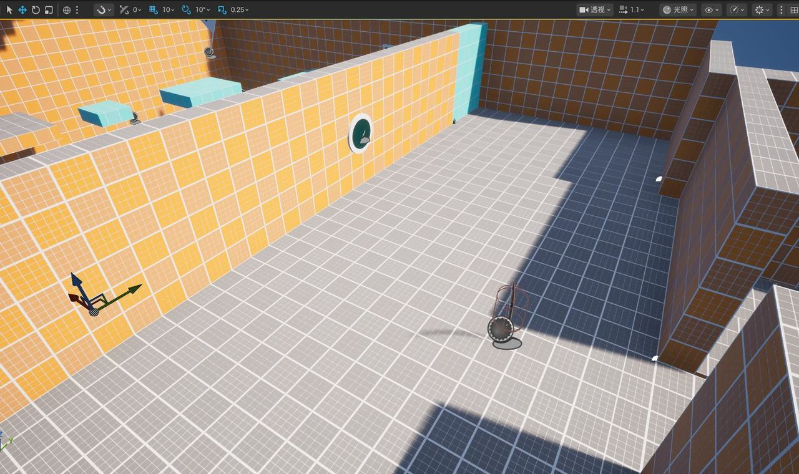
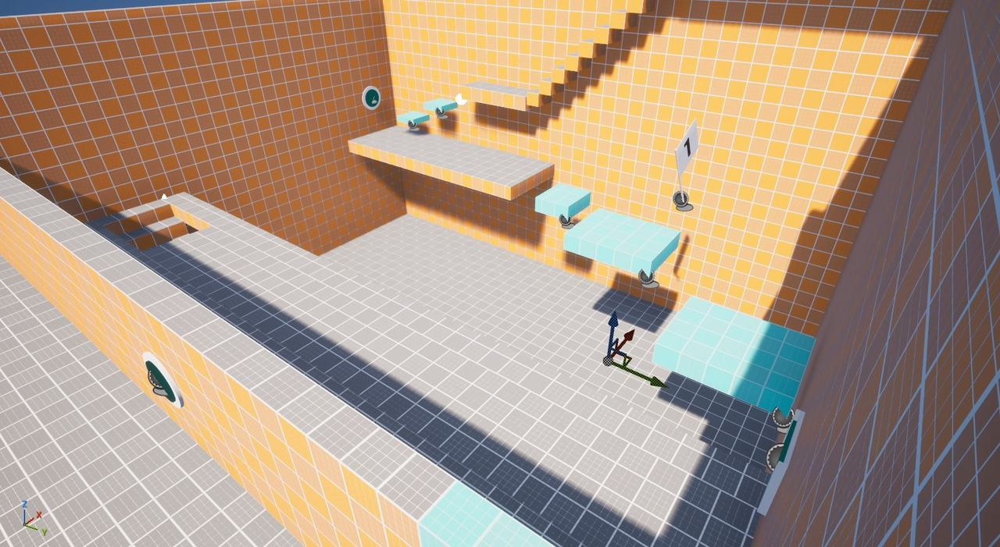
反馈：测试者在这个没有贴图的大房间里迷路或走进死路，缺少视觉层级和明确的面包屑； 另一部分人反映跳跃距离过严——他们误判了 ALS 的空中跳跃极限，频繁掉回房间底部。
修正：调整方块位置，让它们形成更连续的"楼梯"；重新校准精确的跳跃距离， 把平台稍微拉近，并加入中间安全平台降低早期挫败感。
Alpha · 潜行与限时按钮的冲突
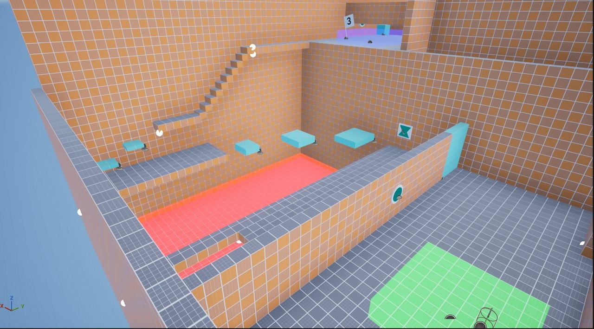
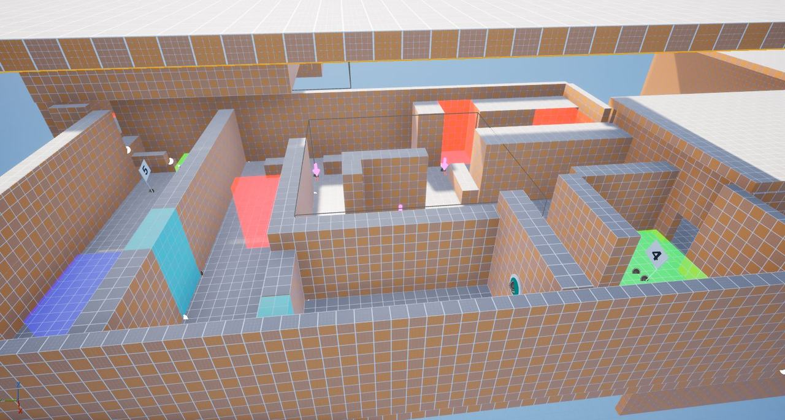
这一阶段我的目标是整合核心玩法循环：潜行机制与能量弓解谜。我加了 AI 守卫、规划了巡逻路线， 并决定引入限时能量按钮来制造紧张感。
反馈：两名测试者都指出限时机制过于苛刻。一位测试者明确说 "给潜行段计时完全抹掉了潜行的感觉"，逼得玩家只能盲目冲刺；另一位觉得第一个谜题的时限太紧。
我当时以为"计时 + 潜行 = 更紧迫"，但这个假设被测试直接否掉了。
Beta · 难度尖峰与主题不清
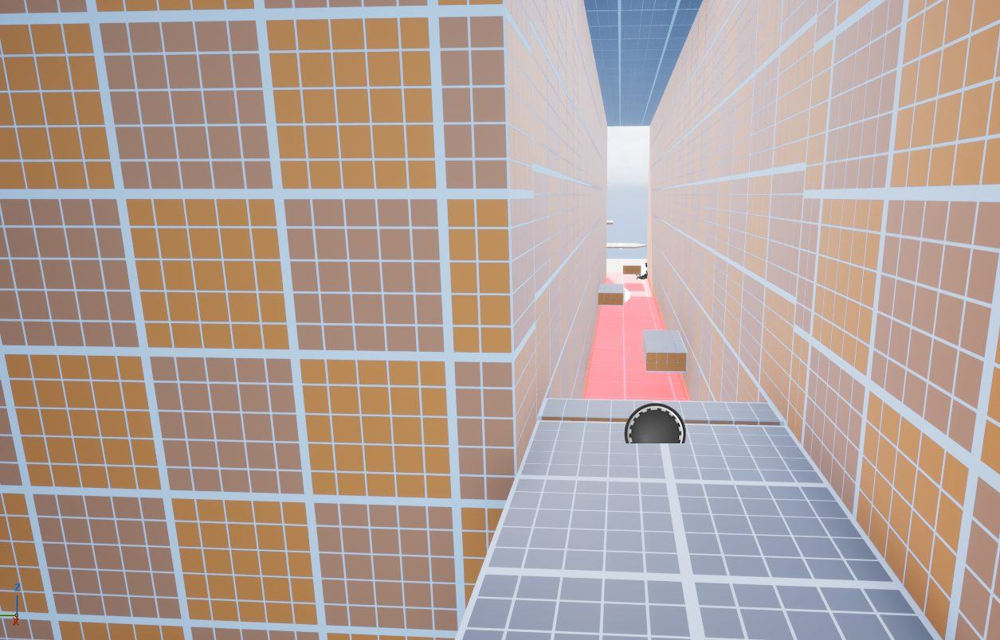
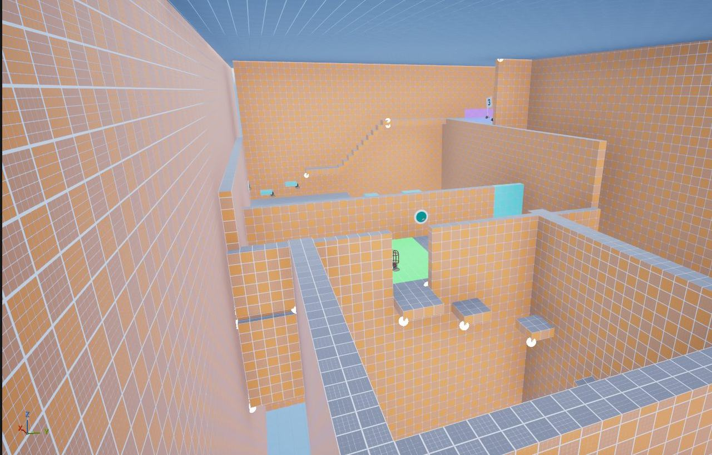
做了什么：按反馈放宽了谜题计时；为增强"限时逃离"段的风险，引入红色击杀方块和移动平台； 在检查点 6 附近安排一名 AI 守卫，并散布更多击杀区来考验玩家的移动精度。
反馈：核心布局确实做出了紧凑、紧张的潜行氛围，但出现了严重的"人为难度"尖峰与主题模糊。 两位测试者明确表示红色击杀方块和检查点 6 上的守卫"过于惩罚，而不是公平的挑战"； 四人中有三人觉得环境依然太抽象、太通用，说不清自己闯进的到底是什么设施。
Gamma · 修引擎层面的摩擦
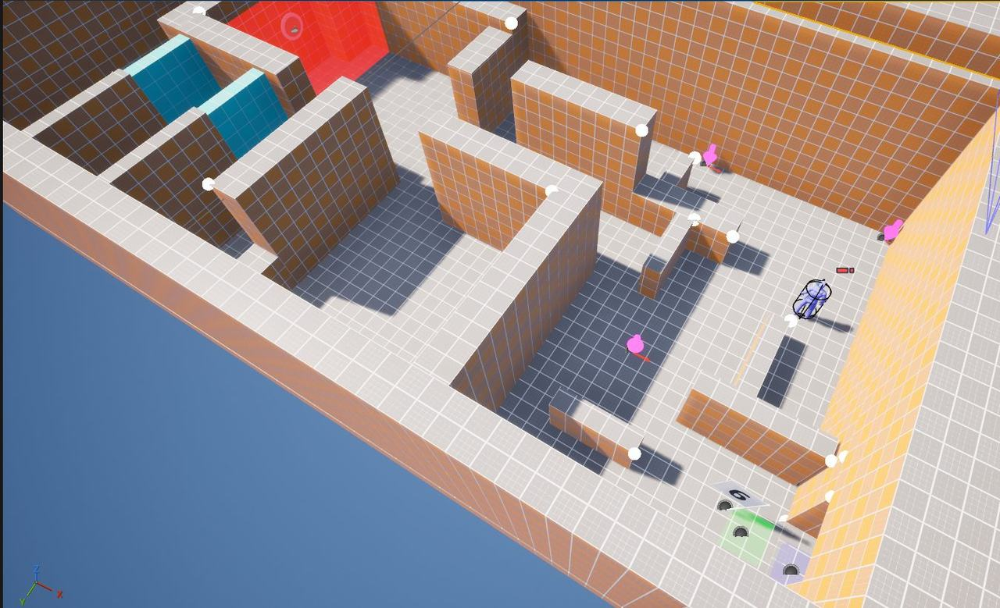
Gamma 阶段几乎全部用来修复 Beta 暴露的机械性摩擦：
- 做关键的空间调整以适配严格的 ALS 运动系统——把可攀爬方块从紧贴墙面的位置拉开，否则翻越动画无法触发。
- 统一攀爬（mantle）高度，避免出现"看着能上但上不去"的反直觉情况。
- 缩小蹲伏区域里击杀区的碰撞盒，修掉"没碰到红区却被判定死亡"的不公平死亡。
反馈：这是所有测试者共同的意见——关卡仍像"一个洞"或"一堆橙色方块"， 不像真实的潜入地点；AI 守卫的存在因此显得随意，因为环境看起来不值得守卫。 另有一位测试者指出整关更像一段连续的计时障碍赛，而不是有明确"潜行"与"逃离"两个阶段。
正面反馈也很明确：线性引导与谜题逻辑受到肯定， 用能量弓按顺序击打一串限时按钮来开不同门的"按钮链"被评价为对机制的聪明用法。 我保留了这套谜题结构，但决定把它更好地整合进改好的环境里。
Final · 用环境本身做引导
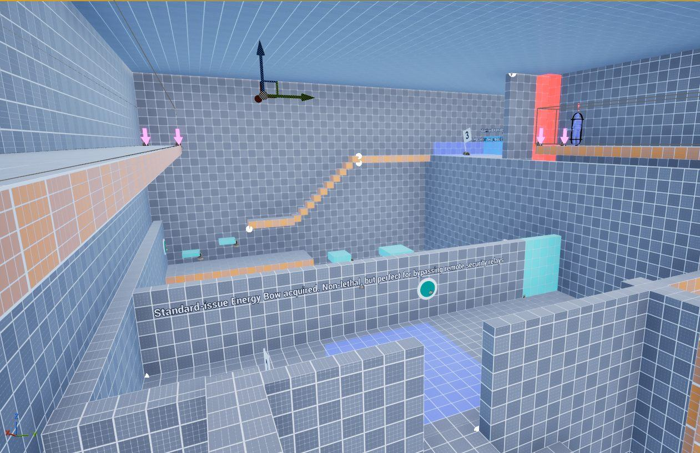
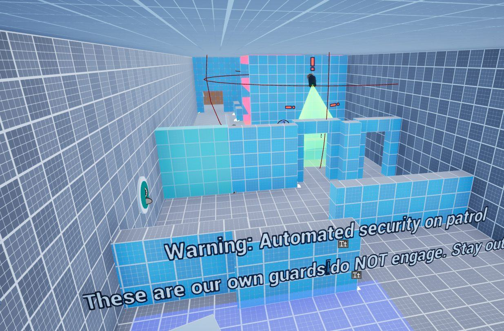
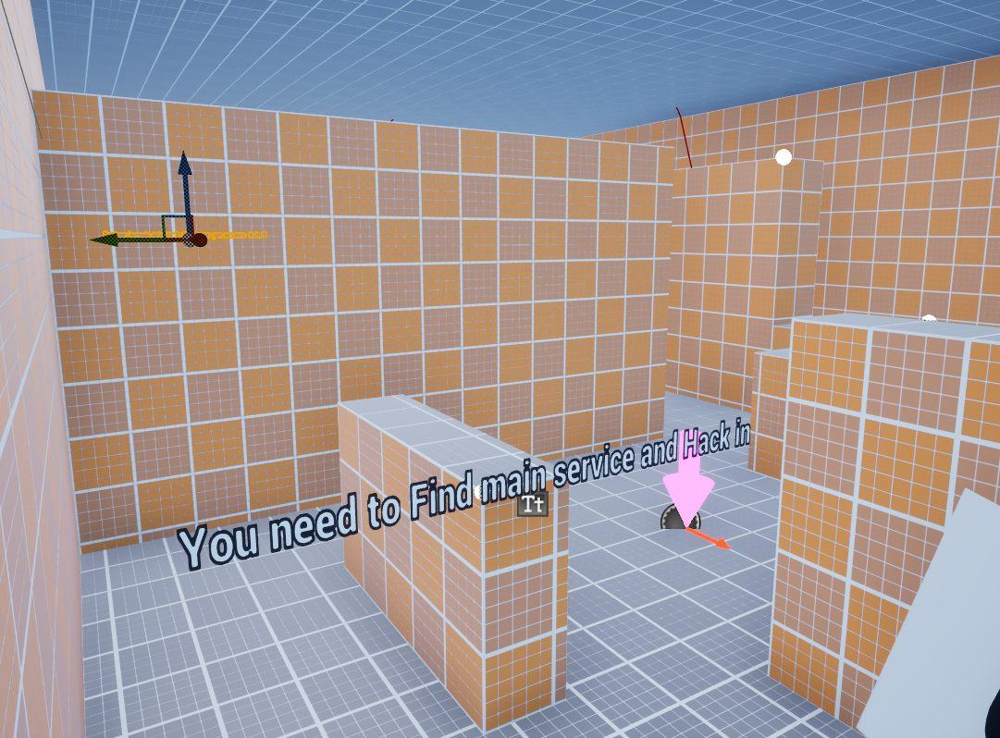
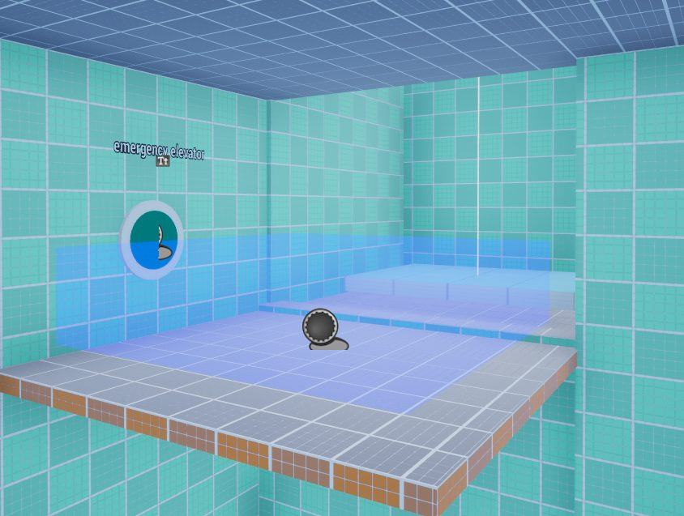
最终打磨的重点是把抽象的 Gamma blockout 变成一座可信的"高科技数据中心"： 用蓝色瓷砖、工业混凝土等不同材质区分可玩区域，并在垂直攀爬井中加入一根巨大的中央立柱结构， 让空间在现实中站得住脚。
最关键的设计决定是把有叙事含义的 AR 引导文字直接做进环境。 像 "Warning: Automated security on patrol"、"INCINERATOR ACTIVE. HAZARD ZONE BELOW" 这样的句子，同时完成了三件事：教会玩家机制（避开守卫、算准跳跃时机）、 强化潜入叙事，而且完全不打破沉浸——比弹窗教程有效得多。
Takeaways
总结与反思
潜行和计时不能混用
早期版本我给潜行段加了计时，以为会更刺激。结果只是让测试者恐慌、盲目冲刺、然后烦躁。 我意识到潜行需要给玩家时间和安全空间去观察，而限时逃离应该是独立的另一段—— 这两者的情绪需求是相反的，不能叠在同一段玩法里。
用环境引导玩家
当关卡还是"一堆橙色方块"的时候，玩家既迷路，也不理解 AI 守卫为什么会在这里。 把 "Warning"、"Incinerator Active" 这类文字直接写在墙上，是我这个项目最重要的收获： 它在不打断沉浸的前提下，自然地把玩家推向下一步。
关卡设计不只是指标精准的跳跃
整个项目最大的结论是：关卡设计不只是"把跳跃距离调准"，而是 把这些跳跃放进一个叙事上说得通的空间里。测试、失败、再修正的循环过程本身， 比任何一次单独的成功修改都更有价值。
这一关经过了大量基于 playtest 的迭代。早期版本被批评"只是橙色方块"、跳跃距离令人烦躁； 最终版在"场所感"上投入了很多，把方块重构为可信的高科技数据设施，并重新校准了跳跃指标， 让难度有挑战但公平。